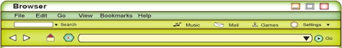

Identità australiana
Richiesta: identità australiana
A visitor to your blog or website site has entered the following post.
Ho appena visitato il tuo blog per caso mentre navigavo in Internet. È una coincidenza perché attualmente sto studiando le culture del mondo anglosassone ... abbiamo un compito da fare e ho scelto di focalizzarmi su quella australiana.
Ho letto già qualcosa dell'Australia ma le informazioni mi sembrano molto generiche, superficiali ... è un' immagine piuttosto stereotipata.
Approfitto della situazione per avere informazioni più precise da un abitante vero e proprio! (se ti va naturalmente)
Ho preparato un sondaggio. Alcune domande sono basate sulle'informazione che ho letto. Vedi l'allegato identità australiana.
Potresti dare un'occhiata e darmi delle risposte. Puoi rispondere sia per scritto o se preferisci allegare un file audio. Vedi tu!
Se è possibile potresti chiedere ad alcune altre persone tanto per avere altri punti di vista.
Grazie mille
Maurizio
Give your personal response to the questions in Italian. Write extended answers in this worksheet so as to provide clarification on the topic for Maurizio.
Survey other people so you can give a more comprehensive account. Use the questions provided. You may also include further questions of your own.
Make a note of the answers. (If you prefer you may choose to record the answers.)
Write a summary of your findings in Italian.
Here are some useful expressions to help you write your summary.
| Secondo il mio sondaggio ... | According to my survey ... |
| Ho notato che ... | I have noticed that ... |
| È interessante notare/sapere che ... | It is interesting to note/know that ... |
| Molti ragazzi pensano che ... (subjunctive verb) | Many young people think that ... |
| Altri credono che ... (subjunctive verb) | Others believe that ... |
| Personalmente, penso che ... (subjunctive verb) | Personally, I think that ... |
Respond to Maurizio's post. Attach a summary of your findings on l'identità australiana.
If you prefer, you can create a sound file to send to Maurizio.
Australian identity is a really interesting topic for your next blog entry. It will be a real challenge to explain to foreigners what being Australian really means. It will require some reflection on your part! Go to Task – Cosa vuole dire essere australiano for further details.
Percorsi che cambiano la vita!
Hai mai pensato di come sarebbe l'esperienza di lasciare la tua città, il tuo paese e di trasferirti in un posto nuovo? In che modo sarebbero diversi il tuo percorso di vita, la tua storia da raccontare, la tua identità?
Take part in a conversation in which you discuss the effect that such an experience would have on your life.
In this conversation you will need to use the conditional and subjunctive verb tenses.
To review these tenses, refer to:
Clicca domande – percorsi vita for questions that will help you get started.
Questa esperienza è una che molte persone in Australia hanno fatto – a volte non per scelta ma per necessità.
You can find out about some Italian migrant experiences by accessing the following risorse.
- Migrant Stories (Italian Course Support Materials: Unit 1A-3B DVD, Curriculum Council)
- Italian Lives (UWA project) http://www.italianlives.arts.uwa.edu.au
- Northbridge History Project http://www.northbridgehistory.wa.gov.au
- Immigration Museum Victoria http://museumvictoria.com.au
- Search for Avventura, forza e coraggio – Secondary LOTE
Dr Loretta Baldassar is Associate Professor in the Department of Anthropology at the University of Western Australia. Her research interests are in migration studies with a specific interest in Italian migration.
Do an Internet search to find out more about her book Visits Home: Migration Experience Between Italy and Australia (2001) and other works that she has published.